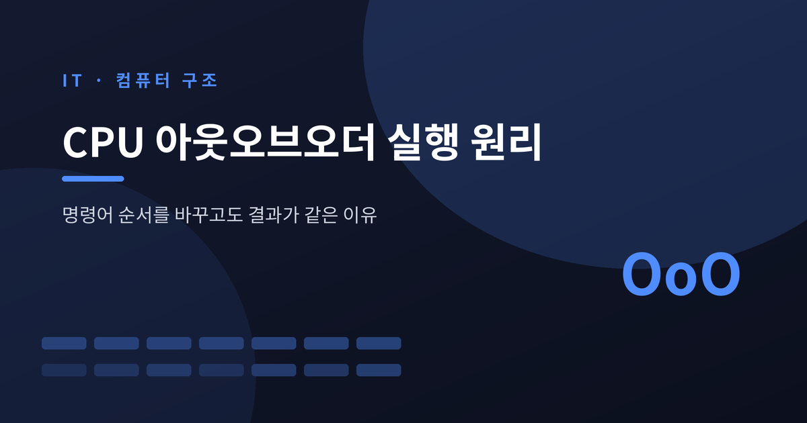
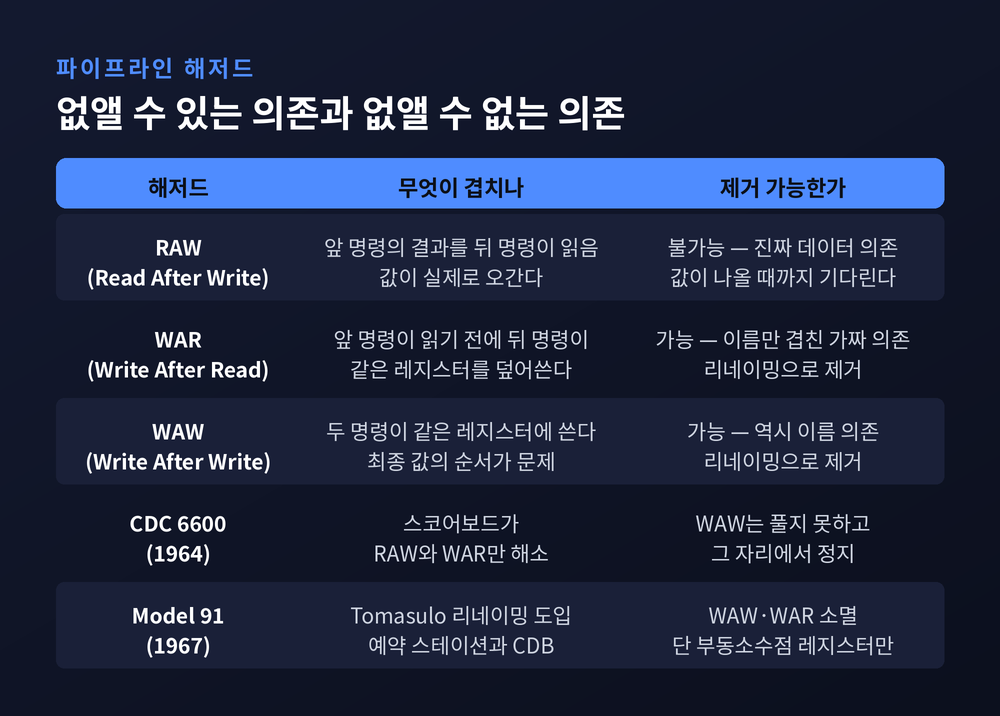
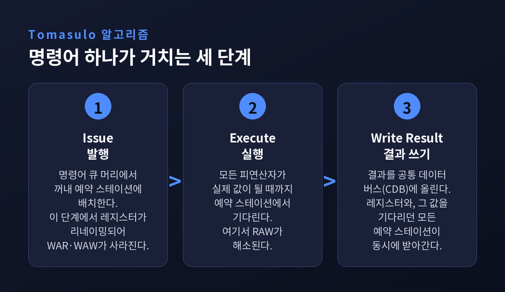
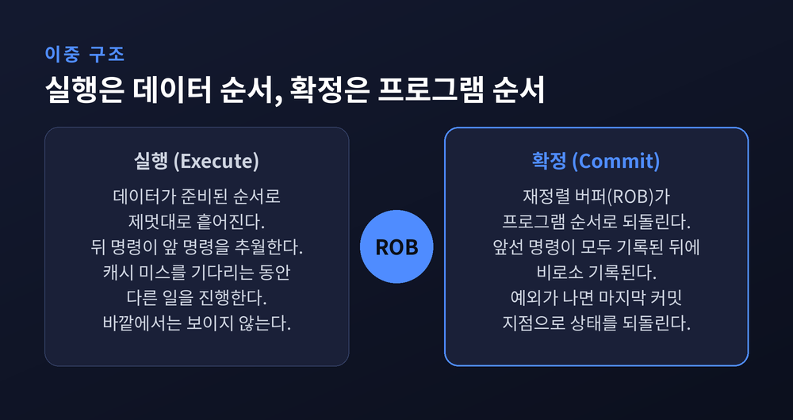
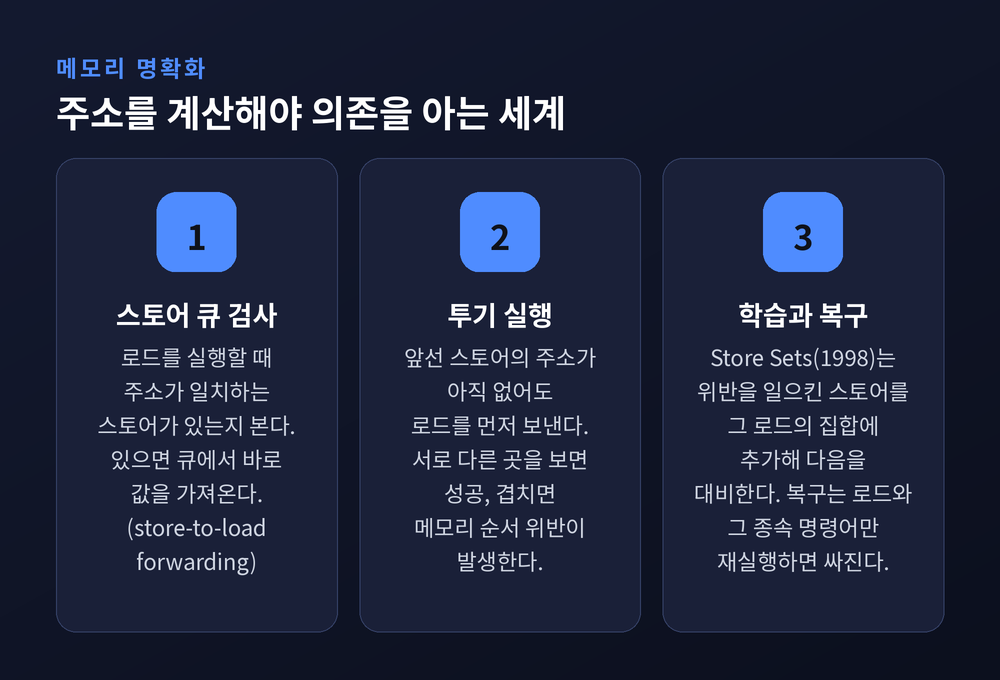
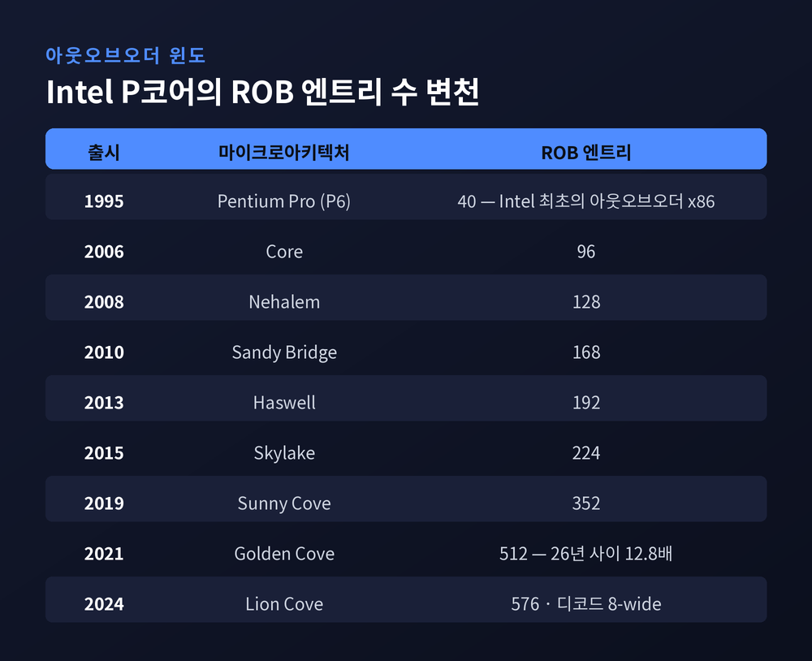
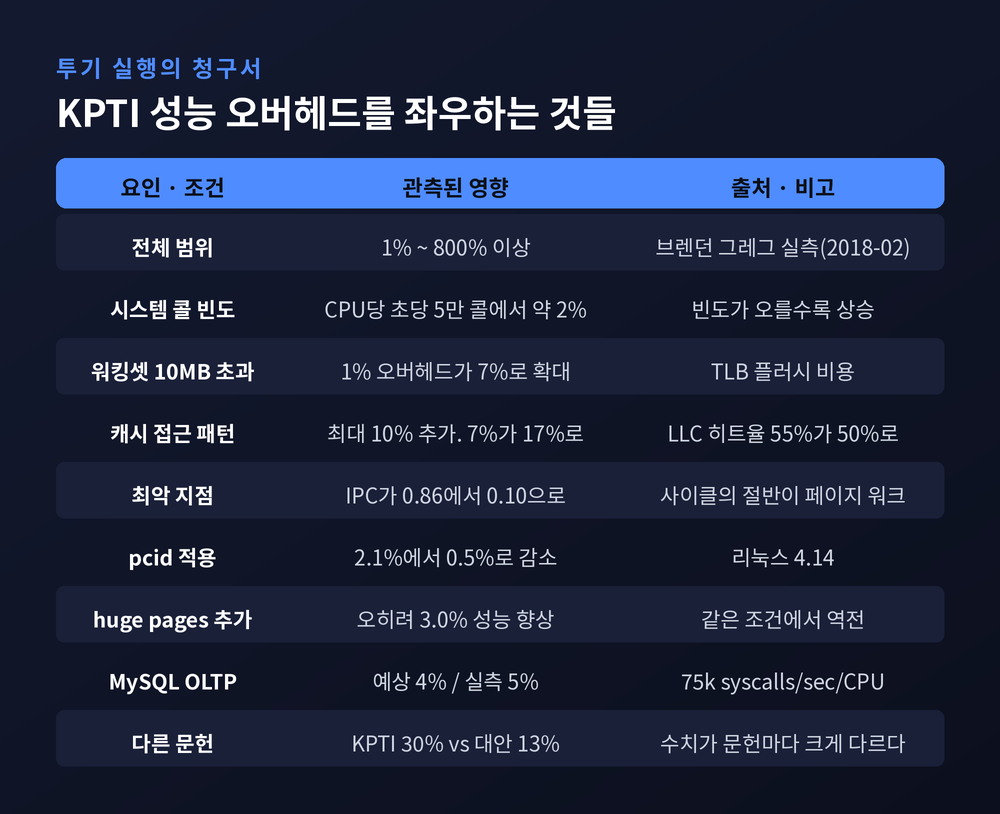

CPU 아웃오브오더 실행 원리 — 명령어 순서를 바꾸고도 결과가 같은 이유

이번 글에서는 프로세서가 명령어 순서를 바꿔가며 빨라지는 원리를 정리해 보겠습니다.
1967년 IBM의 한 논문에서 출발한 이 기법이, 어떻게 오늘날 모든 고성능 CPU의 기본 구조가 되었는지 따라가 봅니다.
세 줄 요약
- 아웃오브오더 실행은 순서를 바꾸는 기술이 아닙니다. 실행은 데이터가 준비된 순서로, 확정은 프로그램 순서로 나누는 이중 구조입니다.
- 없앨 수 있는 것은 이름이 겹쳐서 생긴 가짜 의존(WAR·WAW)뿐입니다. 진짜 데이터 의존(RAW)은 끝까지 기다려야 합니다.
- 확정을 되돌리는 장치는 아키텍처 상태만 되돌렸습니다. 캐시에 남은 흔적은 되돌리지 않았고, 그 틈이 2018년 Meltdown과 Spectre로 드러났습니다.
순서대로 실행하면 왜 멈추는가
인오더 파이프라인의 대응 방식은 단순합니다.
막히면 무조건 멈춥니다. 피연산자가 아직 준비되지 않았으면 그 자리에서 파이프라인 전체가 대기합니다.
인오더 프로세서는 보통 비트 벡터 하나로 "어떤 레지스터에 곧 값이 쓰일 예정인지"를 기록합니다.
입력 피연산자의 비트가 세워져 있으면 정지합니다.
해저드 회피를 위해 인오더는 1차원 벡터를 쓰고, 아웃오브오더는 2차원 행렬을 씁니다.
문제는 멈추는 시간이 갈수록 길어졌다는 점입니다.
프로세서는 메모리보다 몇 배 빠릅니다. 인오더 프로세서가 데이터를 기다리며 낭비하는 그 시간에, 이론적으로는 상당한 수의 명령어를 처리할 수 있었습니다.
그래서 아웃오브오더의 이득은 파이프라인이 깊어질수록, 그리고 메모리와 CPU의 속도 차가 벌어질수록 커집니다.
멈추게 만드는 원인은 세 가지입니다.
첫째, RAW(Read After Write). 앞 명령의 결과를 뒤 명령이 읽어야 하는 진짜 데이터 의존입니다.
둘째, WAR(Write After Read). 앞 명령이 읽기 전에 뒤 명령이 같은 레지스터를 덮어쓰면 안 됩니다.
셋째, WAW(Write After Write). 두 명령이 같은 레지스터에 쓸 때 최종 값이 뒤바뀌면 안 됩니다.
이 셋이 같은 무게를 갖지는 않습니다. 뒤의 둘은 값이 오가는 게 아니라 이름이 겹쳤을 뿐입니다.

이름이 겹쳐서 생긴 가짜 의존
프로그램이 볼 수 있는 레지스터의 이름은 몇 개 되지 않습니다.
그 좁은 이름 공간을 수백 개의 명령어가 돌려 씁니다.
그래서 데이터가 실제로 오가지 않는데도 순서가 묶입니다.
이런 이름 의존(name dependence)을 하드웨어가 몰래 풀어주는 것이 레지스터 리네이밍입니다.
원리는 이렇습니다.
레지스터 rn에 값을 쓰는 명령어가, rn을 쓰는 앞선 명령어보다 먼저 실행됩니다.
실제로는 대체 레지스터 alt-rn에 쓰기 때문에 충돌이 없습니다.
rn을 참조하는 앞선 명령어들이 모두 실행된 뒤에야 alt-rn이 정식 rn이 됩니다.
그때까지 앞선 명령어에게는 rn을, 뒤의 명령어에게는 alt-rn을 내어줍니다.
이 한 번의 속임수로 WAR과 WAW가 완전히 사라집니다.
남는 것은 RAW 하나뿐입니다. 그리고 RAW는 없앨 수 없습니다. 값이 나올 때까지 기다리는 수밖에 없습니다.
1967년의 해법 — 예약 스테이션과 공통 데이터 버스
이 구조를 처음 만든 사람은 IBM의 로버트 토마술로입니다.
1967년 IBM Journal of Research and Development에 실린 논문 "An Efficient Algorithm for Exploiting Multiple Arithmetic Units"가 출발점입니다.
같은 해 IBM System/360 Model 91의 부동소수점 유닛에 처음 구현되었습니다.
혁신은 세 가지였습니다.
하드웨어에서의 레지스터 리네이밍, 모든 실행 유닛에 붙는 예약 스테이션, 그리고 계산된 값을 그 값이 필요할 만한 모든 예약 스테이션에 한꺼번에 뿌리는 공통 데이터 버스(CDB)입니다.
예약 스테이션은 명령어 하나를 실행하는 데 필요한 연산과 피연산자를 담아둡니다.
피연산자는 실제 값이거나, 그 값을 만들어낼 예약 스테이션을 가리키는 태그입니다.
실행 유닛은 자신이 놀고 있고 모든 피연산자가 실제 값이 되었을 때 비로소 움직입니다.
효과는 분업입니다.
기다리는 책임을 예약 스테이션이 대신 지고, 실행 유닛은 자유로워집니다.
덕분에 긴 부동소수점 지연과 메모리 접근을 견딜 수 있고, 특히 캐시 미스에 관대해집니다.
CDB에 대해 토마술로 본인은 이렇게 적었습니다. "동시성을 장려하면서 선후관계를 보존한다."
실행 유닛이 레지스터 파일을 거치지 않고 결과에 접근할 수 있으니 읽기 포트 경합을 기다릴 필요가 없습니다.
해저드 판단도 전용 유닛 하나에 모이지 않고 각 예약 스테이션으로 흩어집니다.
한 가지 덧붙일 점이 있습니다.
예약 스테이션은 레지스터보다 수가 많습니다.
그래서 컴파일러가 제거할 수 있는 것보다 더 많은 이름 의존을 없애고, 더 많은 병렬성을 끌어냅니다.
컴파일러는 코드를 짤 때의 사정만 알지만, 하드웨어는 실행 중의 사정을 압니다.

순서를 바꾸고도 안 바꾼 척하기
여기까지가 절반입니다. 나머지 절반이 더 중요합니다.
명령어는 순서대로 발행됩니다. 그래야 예외 같은 효과가 인오더 프로세서에서와 같은 순서로 발생합니다.
실행은 데이터 순서로 흩어지지만, 결과를 레지스터 파일에 기록하는 것은 다릅니다.
더 오래된 모든 명령어가 결과를 기록한 뒤에야 이 명령어의 결과가 기록됩니다.
이 단계를 리타이어 또는 졸업이라 부릅니다.
이 인오더 확정을 담당하는 장치가 재정렬 버퍼(ROB)입니다.
개념적으로는 원형 버퍼입니다. 진행 중인 모든 명령어를 순서대로 추적하며, 가장 오래된 명령어를 commit head가, 가장 새 명령어를 rob tail이 가리킵니다.
ROB가 있으면 세 가지가 가능해집니다.
투기 실행, 정밀 예외, 그리고 물리 레지스터 회수입니다.
예외가 나면 마지막으로 커밋된 명령어 지점으로 상태를 되돌립니다. 결함 있는 명령어는 아키텍처 상태를 오염시키지 못합니다.
예전에는 이것이 되지 않았습니다.
CDC 6600도, Model 91도 부정확한 예외를 안고 있었습니다. 어느 명령어가 예외를 일으켰는지 특정할 수 없으니 재시작도 재실행도 불가능했습니다.
Model 91은 부동소수점 레지스터만 리네이밍했고, 고정소수점 연산에서는 6600과 똑같은 제약을 받았습니다.
그리고 상업적으로 실패해 1967년에 철수했습니다.
지금은 다릅니다. 그 사이에 결정적인 계산 하나가 있었습니다.
1985년 제임스 스미스와 앤드루 플레스컨이 정밀 인터럽트 구현법을 정리하면서 시뮬레이션을 했습니다.
Cray-1S에 재정렬 버퍼를 추가했을 때 최초 14개 Livermore loops의 성능이 얼마나 떨어지는지 재봤더니, 단 3%였습니다.
순서대로 확정하는 대가가 3%. 이 숫자가 모든 것을 바꿨습니다.

메모리에는 이름표가 없습니다
레지스터는 이름이 명령어에 적혀 있어 의존 관계를 곧바로 알 수 있습니다.
메모리는 그렇지 않습니다. 주소를 계산해봐야 두 접근이 같은 곳을 가리키는지 알 수 있습니다.
그래서 프로세서는 추측합니다. 이것이 메모리 명확화입니다.
로드를 실행할 때 프로세서는 먼저 스토어 큐에 주소가 일치하는 항목이 있는지 검사합니다.
일치하면 값을 스토어 큐에서 바로 가져옵니다. 이것이 store-to-load forwarding입니다.
일치하지 않으면 메모리 서브시스템에 요청을 보냅니다.
문제는 앞선 스토어의 주소가 아직 계산되지 않았을 때입니다.
기다리면 안전하지만 느립니다. 그냥 진행하면 빠르지만 틀릴 수 있습니다.
대부분의 프로세서는 후자를 고릅니다. 로드를 앞선 스토어보다 먼저 실행합니다.
투기가 성공하는 경우는 둘이 서로 다른 메모리 위치를 볼 때입니다.
실패하는 경우는 둘이 겹칠 때입니다. 이때 메모리 순서 위반이 발생하고, 되돌려야 합니다.
되돌리는 비용을 줄이는 방법도 발전했습니다.
1998년에 제안된 Store Sets 예측기는 이렇게 접근합니다.
각 로드에는 자신이 의존하는 특정 스토어 집합이 있다고 보고, 일단 투기적으로 실행시킨 뒤 순서 위반을 일으킨 스토어를 그 로드의 집합에 추가합니다.
다음번에 그 로드는 학습된 스토어들만 기다립니다.
메모리 트랩 페널티는 로드와 그 종속 명령어만 재실행하면 효과적으로 줄일 수 있습니다.
다만 종속 명령어만 골라 리플레이하도록 설계하는 일이 언제나 이득은 아니라는 지적도 함께 있습니다.

26년 사이에 창은 12.8배 넓어졌습니다
숫자로 보면 흐름이 선명합니다.
1995년 Pentium Pro는 통합 예약 스테이션 20 마이크로연산과 ROB 40엔트리로 시작했습니다.
Intel이 설계한 최초의 아웃오브오더 x86이었고, Intel은 이를 '동적 실행'이라 불렀습니다.
x86 전체로 보면 1994년 NexGen Nx586이 먼저였습니다. 재정렬 거리는 최대 14 마이크로연산이었습니다.
2021년 Golden Cove의 ROB는 512엔트리입니다.
디코더는 6개로 늘었고, 사이클당 페치는 32바이트로 두 배가 되었으며, 할당 단계는 6-wide, 실행 포트는 12개입니다.
Intel은 이 세대의 IPC 개선을 이전 세대 대비 약 20%로 밝혔습니다.
한 가지 흥미로운 추가도 있었습니다.
rename/allocate 단계에서 '단순 명령어'를 미리 실행해 긴 의존 사슬을 붕괴시키는 메커니즘입니다.
실행 파이프의 자원을 아끼면서 병렬성을 더 끌어내려는 시도입니다.
다만 Intel은 스케줄러와 물리 레지스터 파일의 정확한 크기는 공개하지 않았습니다.
공개된 확정 수치는 ROB 512엔트리뿐입니다.
이후 세대도 같은 방향으로 갑니다.
Lion Cove는 ROB를 576엔트리로 늘리고 디코드를 8-wide로 넓혔습니다.
Zen 5는 8-wide 디스패치로 448엔트리 ROB를 채웁니다. 다만 단일 스레드는 디코드 클러스터 하나만 씁니다.
Apple의 Firestorm은 8-wide 디코드에 630엔트리 안팎의 매우 깊은 윈도를 가진 것으로 분석됩니다. 애플이 공식 수치를 내놓지 않아 역공학 추정치입니다.

되돌리지 않은 것
ROB는 잘못된 명령어의 결과를 커밋하지 않겠다고 약속했습니다.
그 약속의 대상은 아키텍처 상태, 즉 레지스터와 메모리였습니다.
캐시는 대상이 아니었습니다.
2018년에 드러난 Meltdown과 Spectre는 이 틈을 찔렀습니다.
둘은 과도 실행(transient execution) 공격의 대표 사례로, 투기 실행과 명령어 파이프라이닝, 아웃오브오더 실행의 구현에 있는 하드웨어 설계 결함에 의존합니다.
과도 명령어(transient instruction)는 Meltdown 논문의 용어입니다.
오예측이나 앞선 폴트 때문에 자신의 상태 변화를 아키텍처에 커밋하지 못하고 사라지는, 그러나 이미 실행된 명령어를 뜻합니다.
Meltdown의 수법은 이렇습니다.
권한 없는 공격자가 커널이 있는 특권 메모리에 명시적으로 접근 위반을 일으킵니다.
그런데 CPU는 그 주소의 값을 일단 응답하면서 해당 로드를 '결함'으로 표시합니다.
그리고 반환된 그 값 위에서 이어지는 과도 연산을 허용합니다.
Meltdown은 분기 예측을 쓰지 않습니다. Spectre와 다른 지점입니다.
"어떤 명령어가 트랩을 일으키면, 그 뒤 명령어들이 종료되기 전에 이미 아웃오브오더로 실행되어 있다"는 관찰 하나에 기댑니다.
핵심은 여기입니다.
과도 명령어는 아키텍처적 효과를 남기지 않습니다. 그러나 캐시 상태 같은 마이크로아키텍처 상태에는 영향을 미칩니다.
그 흔적을 Flush+Reload 같은 부채널로 아키텍처 상태로 되바꿀 수 있습니다.
대응은 커널 페이지 매핑을 사용자 주소 공간에서 제거하는 방식이었습니다. 리눅스에서는 KPTI입니다.
그리고 비용이 컸습니다.
넷플릭스의 브렌던 그레그는 2018년 2월에 이렇게 적었습니다.
"Meltdown을 우회하는 패치는 내가 본 것 중 가장 큰 커널 성능 저하를 가져왔다."
그의 실측에서 KPTI 오버헤드는 1%에서 800% 이상까지 벌어졌습니다.
CPU당 초당 5만 시스템 콜에서 약 2%였고, 워킹셋이 10MB를 넘으면 TLB 플러시 때문에 1%짜리 오버헤드가 7%로 커졌습니다.
캐시 접근 패턴이 나쁘면 거기에 10%가 더 붙어 17%가 되기도 했습니다.
최악의 지점에서는 IPC가 0.86에서 0.10으로 떨어졌습니다. CPU 사이클의 절반에서 페이지 워크가 돌고 있었습니다.
물론 대응책도 있었습니다.
리눅스 4.14의 pcid 지원으로 같은 조건의 오버헤드가 2.1%에서 0.5%로 줄었고, huge pages까지 적용하면 오히려 3.0% 빨라지는 역전도 나왔습니다.
숫자가 문헌마다 크게 다른 것도 사실입니다.
어떤 논문은 KPTI 30%, 대안 기법 13%로 보고합니다. 5~30%라는 서술도 있습니다.
하나의 숫자로 말할 수 없습니다. 시스템 콜 빈도와 워킹셋 크기, pcid와 huge page 적용 여부가 결과를 좌우하기 때문입니다.

왜 더 넓히지 않았나
창을 계속 넓히면 계속 빨라질까요. 그렇지 않습니다.
1991년 데이비드 월의 논문 "Limits of instruction-level parallelism"이 이 문제를 정면으로 다뤘습니다.
무한 병렬성과 전지적 스케줄러를 가정한 완벽 모델에서 관측된 최고치는 약 500이었습니다.
그러나 현실적인 모델에서는 최고 약 50, 평균 약 10으로 떨어졌습니다.
이후 연구들도 같은 방향을 가리킵니다.
야심찬 스케줄링 모델에서도 명령어 윈도를 64엔트리에서 256엔트리로 넓혔을 때, 정수 벤치마크의 IPC 이득은 평균 1.1배에 못 미쳤습니다.
네 배를 넓혀 10퍼센트를 겨우 얻는 셈입니다.
이유는 세 가지로 정리됩니다.
버퍼가 크면 이론상 처리량이 늘지만, 분기 오예측이 나면 그 버퍼를 통째로 비워야 합니다.
그리고 큰 버퍼는 더 많은 열을 내고 더 많은 다이 면적을 씁니다.
발행 폭을 4-way에서 8-way로 바꾸는 것도 하드웨어 복잡도와 사이클 타임 때문에 간단하지 않습니다. 배선 지연과 전력 소모가 함께 벽으로 작용합니다.
그래서 방향이 바뀌었습니다.
"이런 이유로 오늘날의 프로세서 설계자들은 멀티스레드 설계 접근법을 선호한다."
주파수를 올리던 시대가 끝나고 코어 수를 늘리던 시대가 왔던 배경이 여기에 있습니다.
물론 아웃오브오더가 물러난 것은 아닙니다.
1998년 Alpha 21264 이후, 최고 성능 아웃오브오더 코어를 인오더 코어가 따라잡은 사례는 Itanium 2와 POWER6 정도뿐입니다.
다만 복잡성이 최저 전력과 최저 비용을 방해하기 때문에, 마이크로컨트롤러와 임베디드, 그리고 big.LITTLE의 소형 코어에서는 여전히 인오더가 주류입니다.
정리하면 이렇습니다.
아웃오브오더 실행은 순서를 바꾸는 기술이 아닙니다.
"순서를 바꿔놓고도, 바깥에서 보기에는 안 바꾼 것처럼 만드는 기술"입니다.
실행은 데이터가 준비된 순서로, 확정은 프로그램에 적힌 순서로. 이 두 겹이 전부입니다.
그리고 그 두 겹 사이에 남은 틈이 2018년에 드러났습니다.
아키텍처 상태는 되돌렸지만 캐시는 되돌리지 않았다는, 20년 넘게 아무도 문제 삼지 않았던 한 줄의 빈칸이었습니다.
프로세서가 여전히 빨라지고 있느냐고 물으신다면, 예전과 같은 방식으로는 아니라고 답하겠습니다.